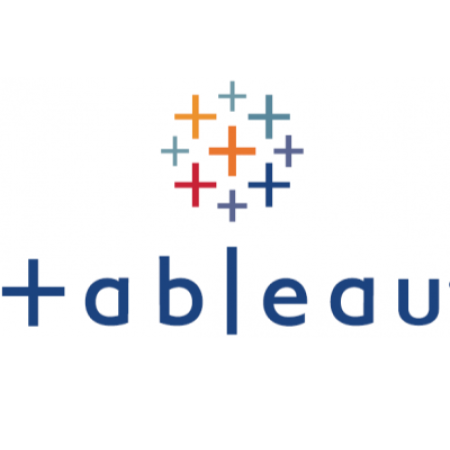

In this project I made Data exploration for COVID19 Dataset To extract information about the epidemic. Which places have the most deaths,
, and What are the countries whose citizens have received the most corona vaccines?

You will find many projects that I have uploaded to tableau public and you can see all the visualizations,
dashboards, and stories I've created through tableau public
In this project, I downloaded movie data from IMDB, analyzed it through Power BI tool and used some DAX equations to create some new columns and aggregation to clarify important information on the dashboard.
In this project, I analyzed data for more than 600 employees of a major company. I made a dashboard for the company to find out the number of departments, the number of employees in each department, the number of employees in each country, the average salaries within the company, the largest salary and the lowest salary and other important dashboards for the company.

Full Data analysis project using many tools and concepts in data analytics.
I worked with data at first in MS SQL server.
Applied many concepts in SQL as DDL, DQL, and DML.
After creating the database I applied some queries to know more about data and understand the data in a good way.
After I finished exploring the data
I use the Power BI tool to do some cleaning on data that I need to visualize.
After finishing cleaning some misleading data.
I started to make some Measures on sales data to extract many insights which will help me In my visualization.Then I started to make many visualization As charts, maps, cards, and bar charts.
Basic data analytics projects on Bikestores DB where I using many concepts on SQL as DDL, DQL, and DML.
I used drop, create, insert, update, delete, and select concepts.